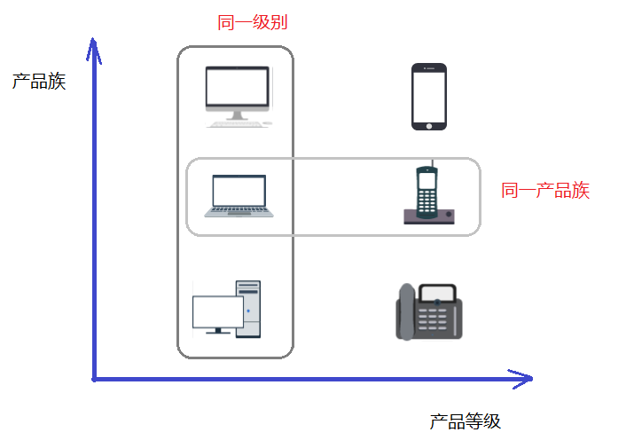

创建型模式 Ⅱ
1-概述
需求：设计一个咖啡店点餐系统。
设计一个咖啡类（Coffee），并定义其两个子类（美式咖啡【AmericanCoffee】和拿铁咖啡【LatteCoffee】）；再设计一个咖啡店类（CoffeeStore），咖啡店具有点咖啡的功能。
具体类的设计如下：
classDiagram
class CoffeeStore {
+ orderCoffee(String type) Coffee
}
class Coffee {
+ getName() String
+ addMilk() void
+ addSugar() void
}
class AmericanCoffee {
+ getName() String
}
class LatteCoffee {
+ getName() String
}
link CoffeeStore "#Code-orderCoffee" "代码链接"
note for CoffeeStore "点击【CoffeeStore】"
Coffee <|-- AmericanCoffee
Coffee <|-- LatteCoffee
Coffee <.. CoffeeStore
Code-orderCoffee
public Coffee orderCoffee(String type) {
Coffee coffee = null;
if("american".equals(type)) {
coffee = new AmericanoCoffee();
} else if ("lattle".equals(type)) {
coffee = new LatteCoffee();
}
//添加配料
coffee.addMilk();
coffee.addsugar();
return coffee;
}在 Java 中，万物皆对象，这些对象都需要创建，如果创建的时候直接 new 该对象，就会对该对象耦合严重，假如我们要更换对象，所有 new 对象的地方都需要修改一遍，这显然违背了软件设计的开闭原则。如果我们使用工厂来生产对象，我们就只和工厂打交道就可以了，彻底和对象解耦，如果要更换对象，直接在工厂里更换该对象即可，达到了与对象解耦的目的；所以说，工厂模式最大的优点就是：解耦。
在本教程中会介绍三种工厂的使用
- 简单工厂模式（不属于 GOF 的 23 种经典设计模式）
- 工厂方法模式
- 抽象工厂模式
2-简单工厂模式
简单工厂不是一种设计模式，反而比较像是一种编程习惯。
2.1 结构
简单工厂包含如下角色：
- 抽象产品 ：定义了产品的规范，描述了产品的主要特性和功能。
- 具体产品 ：实现或者继承抽象产品的子类
- 具体工厂 ：提供了创建产品的方法，调用者通过该方法来获取产品。
2.2 实现
现在使用简单工厂对上面案例进行改进，类图如下：
classDiagram
class CoffeeStore {
+ orderCoffee(String type) Coffee
}
class SimpleCoffeeFactory {
+ createCoffee(String type) Coffee
}
class Coffee {
+ getName() String
+ addMilk() void
+ addSugar() void
}
class AmericanCoffee {
+ getName() String
}
class LatteCoffee {
+ getName() String
}
Coffee <.. SimpleCoffeeFactory : 依赖
Coffee <|-- AmericanCoffee : 继承
Coffee <|-- LatteCoffee : 继承
CoffeeStore ..> SimpleCoffeeFactory : 依赖
link SimpleCoffeeFactory "#SimpleCoffeeFactory-Code" "代码链接"
SimpleCoffeeFactory-Code
public class SimpleCoffeeFactory {
public Coffee createCoffee(String type) {
Coffee coffee = null;
if("americano".equals(type)) {
coffee = new AmericanoCoffee();
} else if("latte".equals(type)) {
coffee = new LatteCoffee();
}
return coffee;
}
}工厂（factory）处理创建对象的细节，一旦有了SimpleCoffeeFactory，CoffeeStore 类中的 orderCoffee() 就变成此对象的客户，后期如果需要 Coffee 对象直接从工厂中获取即可。这样也就解除了和 Coffee 实现类的耦合，同时又产生了新的耦合，CoffeeStore 对象和 SimpleCoffeeFactory 工厂对象的耦合，工厂对象和商品对象的耦合。
后期如果再加新品种的咖啡，我们势必要需求修改 SimpleCoffeeFactory 的代码，违反了开闭原则。工厂类的客户端可能有很多，比如创建美团外卖等，这样只需要修改工厂类的代码，省去其他的修改操作。
2.3 优缺点
优点：
封装了创建对象的过程，可以通过参数直接获取对象。把对象的创建和业务逻辑层分开，这样以后就避免了修改客户代码，如果要实现新产品直接修改工厂类，而不需要在原代码中修改，这样就降低了客户代码修改的可能性，更加容易扩展。
缺点：
增加新产品时还是需要修改工厂类的代码，违背了“开闭原则”。
2.4 拓展(静态工厂)
在开发中也有一部分人将工厂类中的创建对象的功能定义为静态的，这个就是静态工厂模式，它也不是 23 种设计模式中的。代码如下：
public class SimpleCoffeeFactory {
public static Coffee createCoffee(String type) {
Coffee coffee = null;
if("americano".equals(type)) {
coffee = new AmericanoCoffee();
} else if("latte".equals(type)) {
coffee = new LatteCoffee();
}
return coffe;
}
}3-工厂方法模式
针对上例中的缺点，使用工厂方法模式就可以完美的解决，完全遵循开闭原则。
3.1 概念
定义一个用于创建对象的接口，让子类决定实例化哪个产品类对象。工厂方法使一个产品类的实例化延迟到其工厂的子类。
3.2 结构
工厂方法模式的主要角色：
- 抽象工厂（Abstract Factory）：提供了创建产品的接口，调用者通过它访问具体工厂的工厂方法来创建产品。
- 具体工厂（ConcreteFactory）：主要是实现抽象工厂中的抽象方法，完成具体产品的创建。
- 抽象产品（Product）：定义了产品的规范，描述了产品的主要特性和功能。
- 具体产品（ConcreteProduct）：实现了抽象产品角色所定义的接口，由具体工厂来创建，它同具体工厂之间一一对应。
3.3 实现
使用工厂方法模式对上例进行改进，类图如下：
classDiagram
class CoffeeFactory {
<< interface >>
+ createCoffee() Coffee
}
class CoffeeStore {
+ orderCoffee Coffee
}
class Coffee {
+ getName() String
+ addMilk() void
+ addSugar() void
}
class AmericanCoffeeFactory {
+ createCoffee() Coffee
}
class LatteCoffeeFactory {
+ createCoffee() Coffee
}
class AmericanCoffee {
+ getName() String
}
class LatteCoffee {
+ getName() String
}
CoffeeFactory <|.. AmericanCoffeeFactory : 实现
CoffeeFactory <|.. LatteCoffeeFactory : 实现
CoffeeStore ..> Coffee : 依赖
CoffeeFactory <.. CoffeeStore : 依赖
AmericanCoffeeFactory ..> AmericanCoffee : 依赖
Coffee <|-- AmericanCoffee : 继承
Coffee <|-- LatteCoffee : 继承
LatteCoffeeFactory ..> LatteCoffee : 依赖
link CoffeeFactory "#抽象工厂-Code" "代码链接"
link AmericanCoffeeFactory "#具体工厂-Code" "代码链接"
link LatteCoffeeFactory "#具体工厂-Code" "代码链接"
link CoffeeStore "#咖啡店类-Code" "代码链接"
抽象工厂-Code
public interface CoffeeFactory {
Coffee createCoffee();
}具体工厂-Code
public class LatteCoffeeFactory implements CoffeeFactory {
public Coffee createCoffee() {
return new LatteCoffee();
}
}
public class AmericanCoffeeFactory implements CoffeeFactory {
public Coffee createCoffee() {
return new AmericanCoffee();
}
}咖啡店类-Code
public class CoffeeStore {
private CoffeeFactory factory;
public CoffeeStore(CoffeeFactory factory) {
this.factory = factory;
}
public Coffee orderCoffee(String type) {
Coffee coffee = factory.createCoffee();
coffee.addMilk();
coffee.addsugar();
return coffee;
}
}测试类
public class Client {
public static void main(String[] args) {
//创建咖啡店对象
CoffeeStore store = new CoffeeStore();
//创建对象
//CoffeeFactory factory = new AmericanCoffeeFactory();//美式咖啡
CoffeeFactory factory = new LatteCoffeeFactory();//拿铁咖啡
store.setFactory(factory);
//点咖啡
Coffee coffee = store.orderCoffee();
System.out.println(coffee.getName());
}
}从以上的编写的代码可以看到，要增加产品类时也要相应地增加工厂类，不需要修改工厂类的代码了，这样就解决了简单工厂模式的缺点。
工厂方法模式是简单工厂模式的进一步抽象。由于使用了多态性，工厂方法模式保持了简单工厂模式的优点，而且克服了它的缺点。
3.4 优缺点
优点：
- 用户只需要知道具体工厂的名称就可得到所要的产品，无须知道产品的具体创建过程；
- 在系统增加新的产品时只需要添加具体产品类和对应的具体工厂类，无须对原工厂进行任何修改，满足开闭原则；
缺点：
- 每增加一个产品就要增加一个具体产品类和一个对应的具体工厂类，这增加了系统的复杂度。
4-抽象工厂模式
前面介绍的工厂方法模式中考虑的是一类产品的生产，如畜牧场只养动物、电视机厂只生产电视机等。
这些工厂只生产同种类产品，同种类产品称为同等级产品，也就是说：工厂方法模式只考虑生产同等级的产品，但是在现实生活中许多工厂是综合型的工厂，能生产多等级（种类） 的产品，如电器厂既生产电视机又生产洗衣机或空调，大学既有软件专业又有生物专业等。
本节要介绍的抽象工厂模式将考虑多等级产品的生产，将同一个具体工厂所生产的位于不同等级的一组产品称为一个产品族，下图所示横轴是产品等级，也就是同一类产品；纵轴是产品族，也就是同一品牌的产品，同一品牌的产品产自同一个工厂。

4.1 概念
是一种为访问类提供一个创建一组相关或相互依赖对象的接口，且访问类无须指定所要产品的具体类就能得到同族的不同等级的产品的模式结构。
抽象工厂模式是工厂方法模式的升级版本，工厂方法模式只生产一个等级的产品，而抽象工厂模式可生产多个等级的产品。
4.2 结构
抽象工厂模式的主要角色如下：
- 抽象工厂（Abstract Factory）：提供了创建产品的接口，它包含多个创建产品的方法，可以创建多个不同等级的产品。
- 具体工厂（Concrete Factory）：主要是实现抽象工厂中的多个抽象方法，完成具体产品的创建。
- 抽象产品（Product）：定义了产品的规范，描述了产品的主要特性和功能，抽象工厂模式有多个抽象产品。
- 具体产品（ConcreteProduct）：实现了抽象产品角色所定义的接口，由具体工厂来创建，它 同具体工厂之间是多对一的关系。
4.3 实现
现咖啡店业务发生改变，不仅要生产咖啡还要生产甜点，如提拉米苏、抹茶慕斯等，要是按照工厂方法模式，需要定义提拉米苏类、抹茶慕斯类、提拉米苏工厂、抹茶慕斯工厂、甜点工厂类，很容易发生类爆炸情况。其中拿铁咖啡、美式咖啡是一个产品等级，都是咖啡；提拉米苏、抹茶慕斯也是一个产品等级；拿铁咖啡和提拉米苏是同一产品族（也就是都属于意大利风味），美式咖啡和抹茶慕斯是同一产品族（也就是都属于美式风味）。所以这个案例可以使用抽象工厂模式实现。类图如下：
classDiagram
class Dessert {
+ show() void
}
class Coffee {
+ getName() String
+ addMilk() void
+ addSugar() void
}
class Tiramisu {
+ show() void
}
class MatchaMousse {
+ show() void
}
class AmericanCoffee {
+ getName() String
}
class LatteCoffee {
+ getName() String
}
class AmericanDessertFactory {
+ createCoffee() Coffee
+ createDessert() Dessert
}
class ItalyDessertFactory {
+ createCoffee() Coffee
+ createDessert() Dessert
}
class DessertFactory {
<< interface >>
+ craeteCOffee() Coffee
+ createDessert() Dessert
}
Dessert <|-- Tiramisu : 继承
Dessert <|-- MatchaMousse : 继承
Coffee <|-- AmericanCoffee : 继承
Coffee <|-- LatteCoffee : 继承
Tiramisu <.. AmericanDessertFactory : 依赖
MatchaMousse <..AmericanDessertFactory : 依赖
AmericanCoffee <.. ItalyDessertFactory : 依赖
LatteCoffee <.. ItalyDessertFactory : 依赖
ItalyDessertFactory ..|> DessertFactory : 实现
AmericanDessertFactory ..|> DessertFactory : 实现
link DessertFactory "#抽象工程-Code"
link ItalyDessertFactory "#具体工厂2-Code"
link AmericanDessertFactory "#具体工厂2-Code"
抽象工厂-Code
public interface DessertFactory {
//生产咖啡的功能
Coffee createCoffee();
//生产甜品的功能
Dessert createDessert();
}具体工厂2-Code
//美式甜点工厂
public class AmericanDessertFactory implements DessertFactory {
public Coffee createCoffee() {
return new AmericanCoffee();
}
public Dessert createDessert() {
return new MatchaMousse();
}
}
//意大利风味甜点工厂
public class ItalyDessertFactory implements DessertFactory {
public Coffee createCoffee() {
return new LatteCoffee();
}
public Dessert createDessert() {
return new Tiramisu();
}
}测试类
public class Client {
public static void main(String[] args) {
//创建的是意大利风味甜品工厂对象
//ItalyDessertFactory factory = new ItalyDessertFactory();//意大利风味工厂
AmericanDessertFactory factory = new AmericanDessertFactory();//美式风味工厂
//获取拿铁咖啡和提拉米苏甜品
Coffee coffee = factory.createCoffee();
Dessert dessert = factory.createDessert();
System.out.println(coffee.getName());
dessert.show();
}
}如果要加同一个产品族的话，只需要再加一个对应的工厂类即可，不需要修改其他的类。
4.3 优缺点
优点：
当一个产品族中的多个对象被设计成一起工作时，它能保证客户端始终只使用同一个产品族中的对象。
缺点：
当产品族中需要增加一个新的产品时，所有的工厂类都需要进行修改。
4.4 使用场景
-
当需要创建的对象是一系列相互关联或相互依赖的产品族时，如电器工厂中的电视机、洗衣机、空调等。
-
系统中有多个产品族，但每次只使用其中的某一族产品。如有人只喜欢穿某一个品牌的衣服和鞋。
-
系统中提供了产品的类库，且所有产品的接口相同，客户端不依赖产品实例的创建细节和内部结构。
如：输入法换皮肤，一整套一起换。生成不同操作系统的程序。
5-模式扩展
简单工厂+配置文件解除耦合
可以通过工厂模式 + 配置文件的方式解除工厂对象和产品对象的耦合。在工厂类中加载配置文件中的全类名，并创建对象进行存储，客户端如果需要对象，直接进行获取即可。
① 定义配置文件
为了演示方便，我们使用 properties 文件作为配置文件，名称为 bean.properties
american=cn.saddyfire.pattern.factory.config_factory.AmericanCoffee
latte=cn.saddyfire.pattern.factory.config_factory.LatteCoffee② 改进工厂类
public class CoffeeFactory {
//加载配置文件, 获取配置文件中配置的全类名, 并创建该类的对象进行存储
//1.定义容器对象存储咖啡对象
private static HashMap<String, Coffee> map = new HashMap<>();
//2.加载配置文件, 只需要加载一次, 因此放在静态代码块里
static {
//2.1 创建Properties对象
Properties p = new Properties();
//2.2 调用p对象中的load方法进行配置文件的加载
InputStream is = CoffeeFactory.class.getClassLoader().getResourceAsStream("bean.properties");
try {
p.load(is);
//从p集合中获取全类名并创建对象
for (Object key : p.keySet()) {
String className = p.getProperty((String) key);
Class<?> clazz = Class.forName(className);
//无参构造
Coffee coffee = (Coffee) clazz.newInstance();
map.put((String) key, coffee);
}
} catch (Exception e) {
e.printStackTrace();
}
}
public static Coffee craeteCoffee(String name) {
return map.get(name);
}
}测试类
public class Test {
public static void main(String[] args) {
Coffee coffee = CoffeeFactory.craeteCoffee("american");
System.out.println(coffee.getName());
System.out.println("===========");
Coffee latte = CoffeeFactory.craeteCoffee("latte");
System.out.println(coffee.getName());
}
}静态成员变量用来存储创建的对象（键存储的是名称，值存储的是对应的对象），而读取配置文件以及创建对象写在静态代码块中，目的就是只需要执行一次。
6-JDK 源码案例
Collection.iterator() 方法
public class Demo {
public static void main(String[] args) {
List<String> list = new ArrayList<>();
list.add("令狐冲");
list.add("风清扬");
list.add("任我行");
//获取迭代器对象
Iterator<String> it = list.iterator();
//使用迭代器遍历
while(it.hasNext()) {
String ele = it.next();
System.out.println(ele);
}
}
}对上面的代码大家应该很熟，使用迭代器遍历集合，获取集合中的元素。而单列集合获取迭代器的方法就使用到了工厂方法模式。我们看通过类图看看结构：
classDiagram
class Collection {
<< interface >>
+ iterator() Iterator
}
class Iterator {
<< interface >>
+ hasNext() boolean
+ next() I
}
class ArrayList {
+ iterator() Iterator
}
class `ArrayList$Iter` {
+ hasNext() boolean
+ next() I
}
Collection <|.. ArrayList : 实现
Collection ..> Iterator: 依赖
Iterator <|.. `ArrayList$Iter` : 实现
ArrayList ..> `ArrayList$Iter` : 依赖
Collection 接口是抽象工厂类，ArrayList 是具体工厂类；Iterator 接口是抽象商品类，ArrayList 类中的 Iter 内部类是具体商品类。在具体的工厂类中 iterator() 方法创建具体的商品类的对象。
另：
- DateForamt 类中的 getInstance() 方法使用的是工厂模式；
- Calendar 类中的 getInstance() 方法使用的是工厂模式；